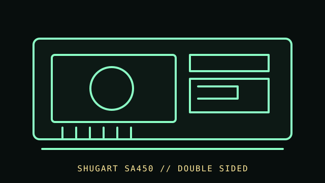

[ FLOPPY DRIVES // IDENTIFIED MODEL ]
Shugart SA450 5.25-inch Drive
Shugart SA450 is a 5.25-inch double-sided mini-floppy drive model in Shugart’s SA4xx line. It is distinct from the SA400 and requires its own documented interface and service configuration.

MODEL IDENTIFICATION: Shugart SA450; verify label, assembly/revision, OEM suffix, and the matching SA450 manual before service. This record keeps variant-dependent claims qualified; verify the physical unit and applicable manual before connecting, servicing, or formatting media.
Recorded specifications
| Catalog model | Shugart SA450 5.25-inch Drive |
|---|---|
| Device type | 5.25-inch double-sided floppy mechanism |
| Interface / connector | Shugart SA450 drive interface per its OEM/service manuals; exact signals and controller wiring must be matched, not assumed from PC connector shape. |
| Media / formats | 5.25-inch flexible disks; track, density, encoding, and formatted capacity depend on SA450 revision, controller, and media. The manual/model-specific format governs. |
| Revision caution | Match full model code, board/ROM/firmware revision, connector, cable, and documentation edition. Family-level ratings and host claims do not automatically apply to every unit. |
Host-controller and format compatibility
- Use a controller and cabling documented for the SA450. Host BIOS support requires a matching controller and software; a bare drive does not provide BIOS support.
- Verify interface/power pinout, drive select, termination, and recording mode against the exact SA450 manual before connecting. Do not infer SA400 pinout or configuration without checking.
- Model and OEM configuration may differ; record board and adjustment state before alignment work.
Preservation and safe cleaning
Disconnect power and controller wiring before maintenance. Do not insert contaminated media. Clean only according to the SA450 service manual for the identified revision; avoid touching the head surface or solvent on disks.
For a disk acquisition, record the physical media label and condition, drive/model/revision, controller, host, software/firmware, settings, and any errors. Keep original media and raw captures/images unchanged; checksum verified copies and document conversions as derivatives.
Primary manuals & standards/archive references
- Shugart SA450 OEM Manual, 39013-1 (October 1980) — Internet Archive / BitsaversManufacturer OEM manual for the SA450 and interface configuration.
- Shugart SA450 Double-Sided Mini-Floppy Service Manual, 39014-0 (April 1981) — Internet ArchiveModel-specific service manual for the SA450.
- Shugart SA400 service documentation — Internet ArchiveRelated-family context only; the SA450 manual governs its own setup.
Source scope is stated per link. Prefer the matching manufacturer manual and revision over family summaries. Capacities and recording modes are omitted when not supported for the exact model and format.